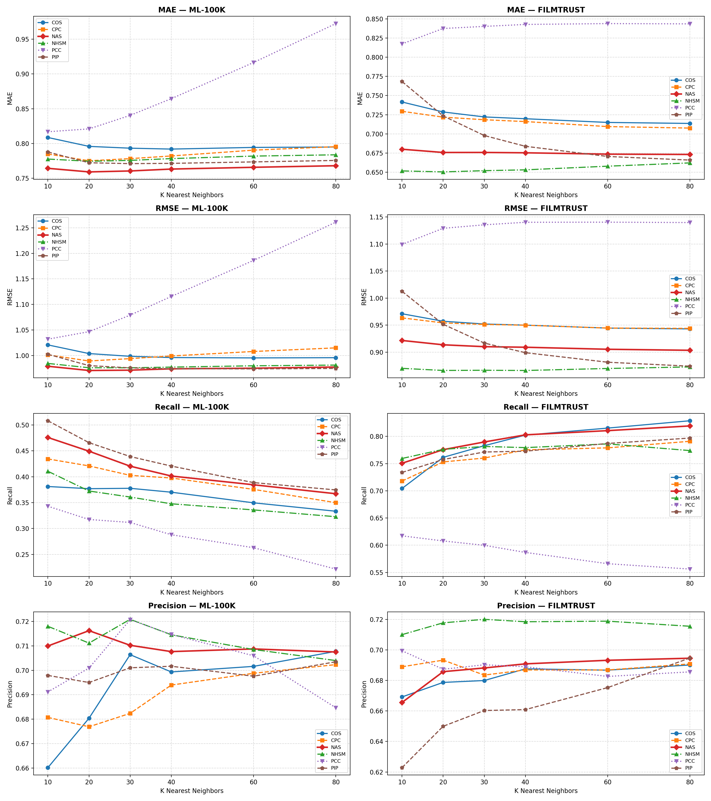
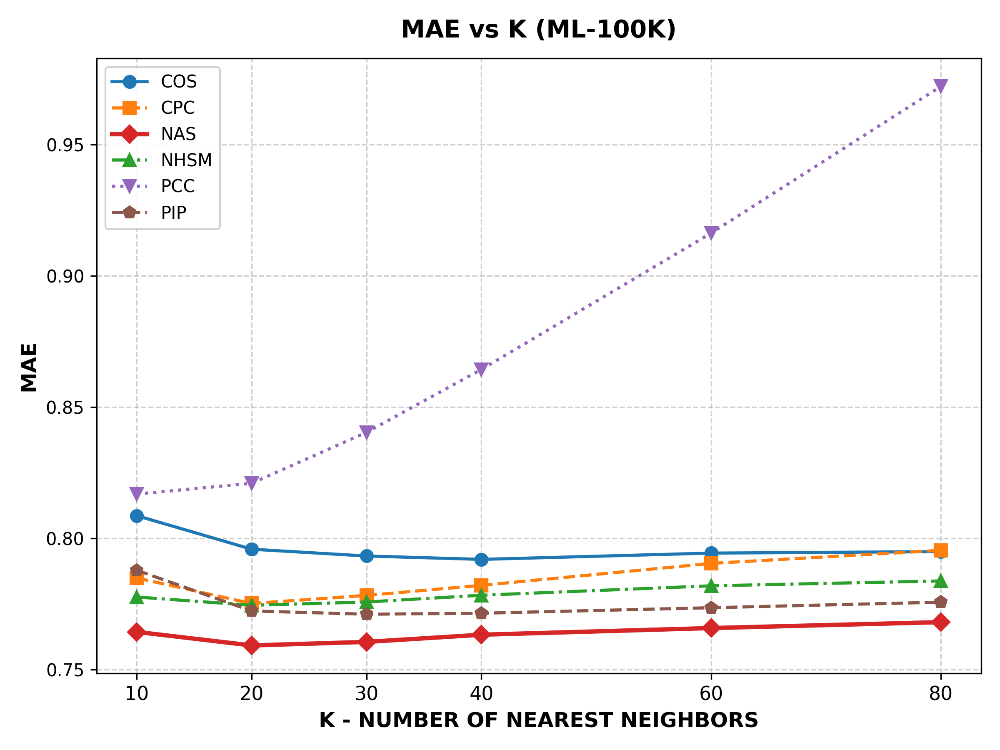
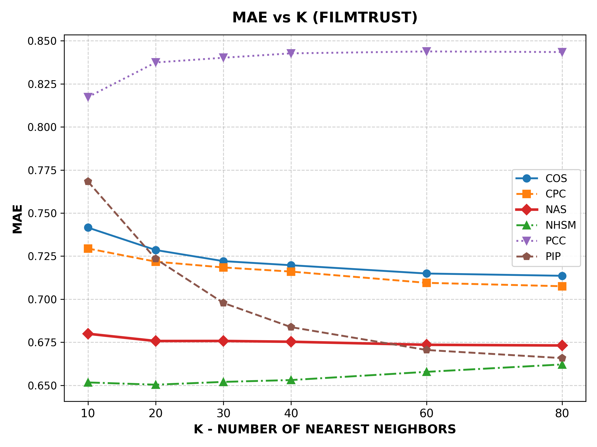
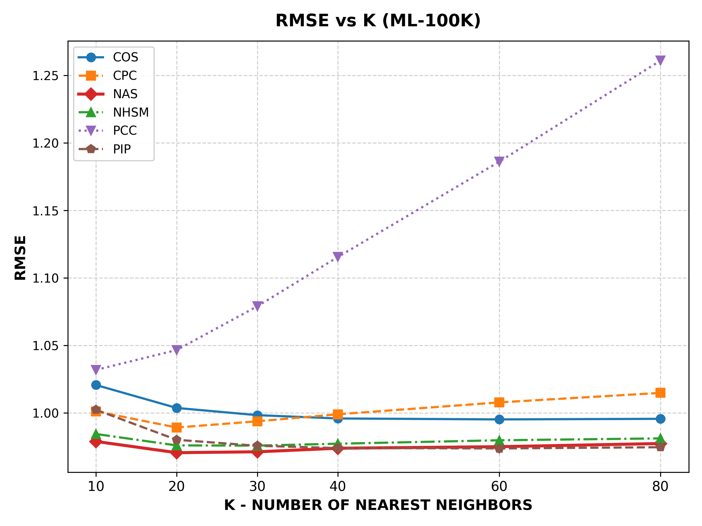
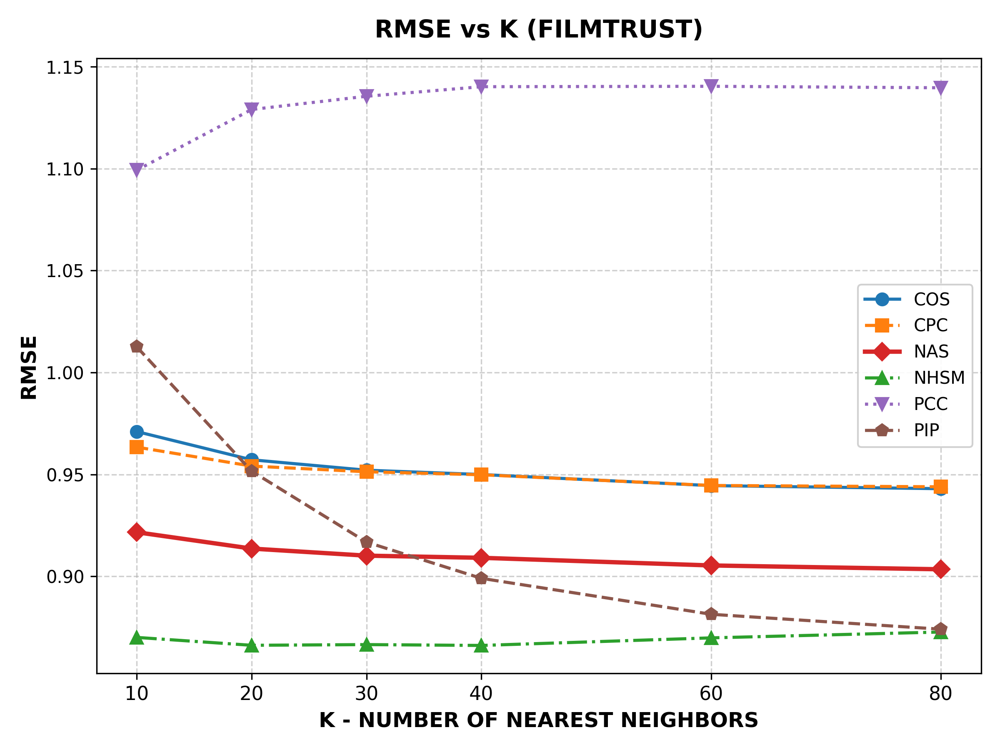
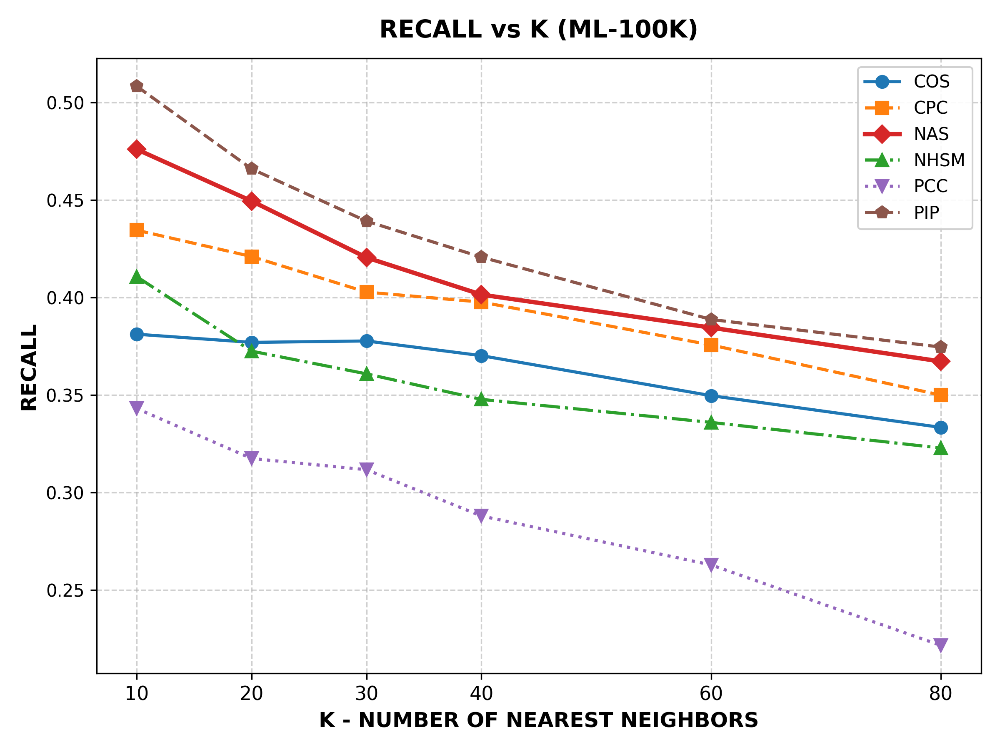
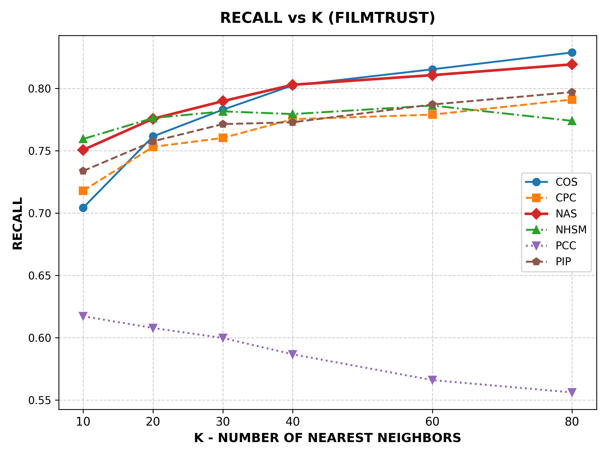
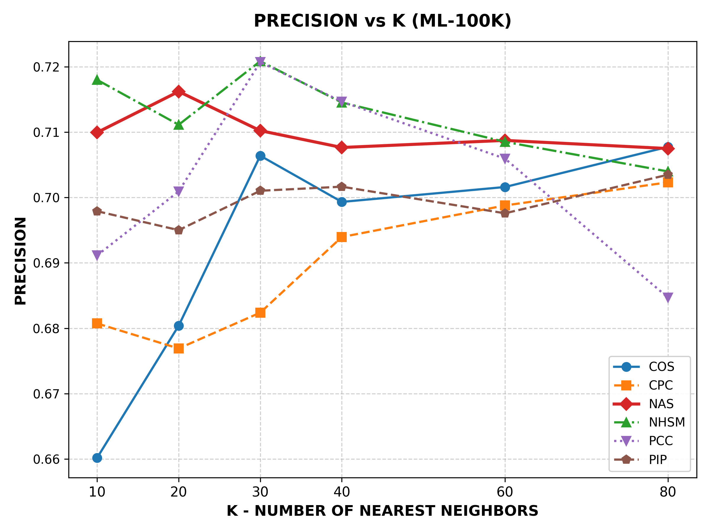
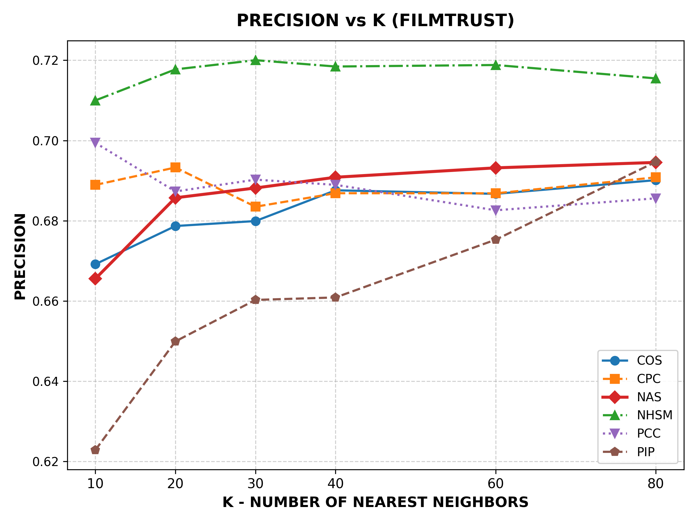

Replication of Birim & Tümtürk (2022) | Benchmark on MovieLens 100K & FilmTrust
Master Comparison Dashboard (All 8 Subplots)


Figure 1a: MAE vs K (MovieLens 100K)

Figure 1b: MAE vs K (FilmTrust)

Figure 2a: RMSE vs K (MovieLens 100K)

Figure 2b: RMSE vs K (FilmTrust)

Figure 3a: Recall vs K (MovieLens 100K)

Figure 3b: Recall vs K (FilmTrust)

Figure 4a: Precision vs K (MovieLens 100K)

Figure 4b: Precision vs K (FilmTrust)
| Dataset | Similarity | Metric | K=10 | K=20 | K=30 | K=40 | K=60 | K=80 |
|---|